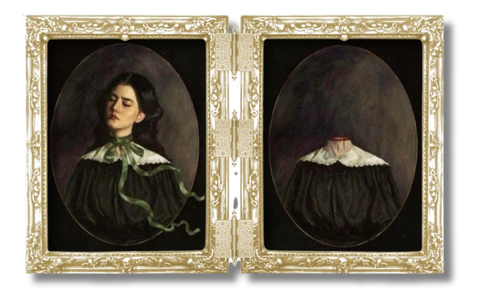

In the beginning of the story (1), it can be inferred that the protagonist, a female who is narrating her own story, has self-autonomy and self-agency. She knows what she wants and she knows how to get it. She glances at the boy and decides she likes him. She also knows that she has a chance with this boy, as she is aware of the privilege she has (2).
She is successful in charming the boy; however, she has a secret (or so that is how the boy wants to describe it). She wears a green ribbon around her neck that she cannot remove no matter what. She does not tell the boy about the reason, but the boy wants to know (17-22). Later on, after she marries the boy, he insists that she tell him the nature of the ribbon. According to him, “a wife should have no secrets from her husband” (121). She tells him that the ribbon is not her secret; it is just hers (124). The ribbon is part of her identity just as much as any part of her body, and as such, she has the right to decide what to do, or not to do, with it.
From this interaction, it can be seen that the husband does not respect the decisions of the woman. In the Philippines, particularly, this concept is viewed through the mixed lens of masculinity and the role of males as the “head of the family.” Academic studies such as those of Liaqat (3) found that nearly 80% of the 421 household samples agreed that the husband is the final decision-maker. The Filipino ideology that masculinity lies in decisiveness while femininity is defined by passivity dates back centuries ago to the introduction of Catholicism by the Spanish colonial empire (Fast 8).
This historical baggage creates a cultural climate where the husband’s entitlement to the woman’s body and secrets—like his obsession with the ribbon—is often misconstrued as a marital right rather than a violation of autonomy. By viewing the woman as an extension of his own household authority rather than a distinct individual with private boundaries, the husband mirrors the patriarchal "padre de pamilya" archetype who equates love with total access. Ultimately, the "husband stitch" and the untying of the ribbon serve as metaphors for a broader systemic refusal to let women own their narratives, a reality that remains deeply entrenched in the Filipino domestic psyche.